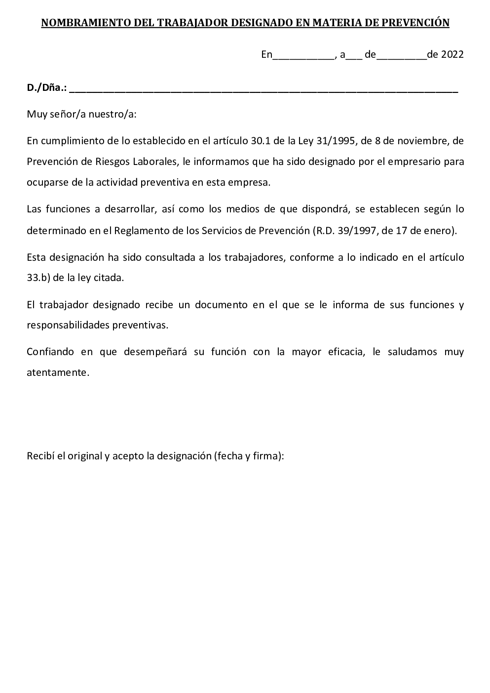

En esta modalidad de organización el empresario elige a uno o varios trabajadores para que desarrollen la actividad preventiva en la empresa (art. 30.2 LPRL y art. 12 RSP).
El número de trabajadores designados, los medios utilizados y el tiempo de que dispongan, deberán ser los necesarios para desarrollar adecuadamente sus funciones en función del tamaño de la empresa y los riesgos a los que están expuestos los trabajadores. El nivel de formación en prevención de los trabajadores debería ser como mínimo el de nivel básico, aunque podría ser recomendable el nivel intermedio o superior para poder asumir más funciones (art. 13 RSP).
Elaboración propia. Modelo acta nombramiento de trabajador designado
Información y documentación
Para la realización de la actividad de prevención, el empresario deberá facilitar a los trabajadores designados el acceso a la información y documentación a que se refieren los arts 18 y 23 LPRL. Es decir:
Información relativa a:
Riesgos para la seguridad y la salud, generales y particulares de cada puesto de trabajo.
Medidas y actividades de protección y prevención aplicables.
Medidas adoptadas para casos de emergencia.
Documentación relativa a:
Evaluación de riesgos y planificación de la acción preventiva.
Medidas de protección y prevención a emplear y material de protección a utilizar.
Resultados de los controles periódicos de las condiciones de trabajo y actividades de los trabajadores.
Práctica de los controles del estado de la salud.
Relación de accidentes de trabajo y enfermedades profesionales con baja superior a un día.
Funciones
Corresponde a los trabajadores designados la planificación y ejecución de la actividad preventiva, así como el asesoramiento del empresario en todo lo relativo a la prevención de riesgos en la empresa. En su caso, las actividades que no puedan cubrir los trabajadores designados (por lo general, las relativas a la vigilancia de la salud) deberán ser desarrolladas a través de uno o varios Servicios de Prevención.
Caso práctico
Alfonso, el propietario de un taller de chapa y pintura con una plantilla de 15 trabajadores debe organizar la prevención. Dado que él carece de ningún tipo de formación en materia de prevención de riesgos ha renunciado a asumir personalmente su gestión.
En el taller trabajan Mónica y Francisco realizando labores de administración y de carrocería respectivamente. Mónica es técnica superior en Administración y Finanzas además de estar en posesión del master en prevención de riesgos laborales por las especialidades de seguridad en el trabajo, higiene industrial y ergonomía y psicosociología. Francisco por su parte es técnico en carrocería y técnico superior en prevención de riesgos profesionales.
Alfonso inicialmente decidió encargar la gestión de la prevención a Mónica, quien compaginó las funciones de trabajadora designada en prevención con las propias como administrativa. Sin embargo, al cabo de unos meses resultó evidente que no podía llevar ambas funciones ella sola, por lo que Alfonso designó a Francisco como segundo trabajador designado para compartir parte de las responsabilidades en materia preventiva con Mónica.
El resto de funciones preventivas que ni Mónica ni Francisco asumen (vigilancia de la salud) son llevadas a cabo por un servicio de prevención ajeno, siendo Mónica el enlace con dicho servicio de prevención.
.jpg){kind=link}